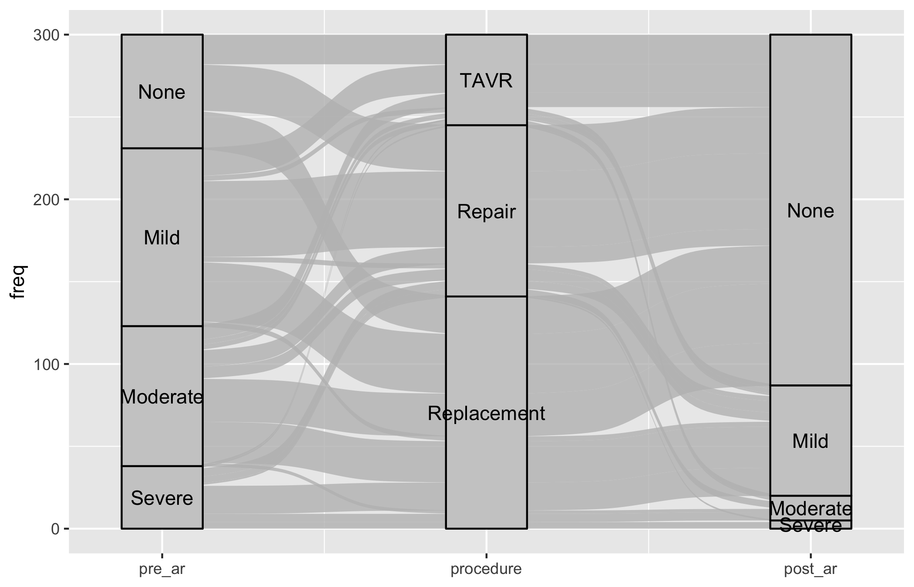
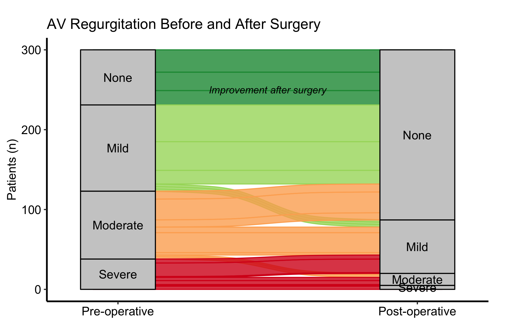
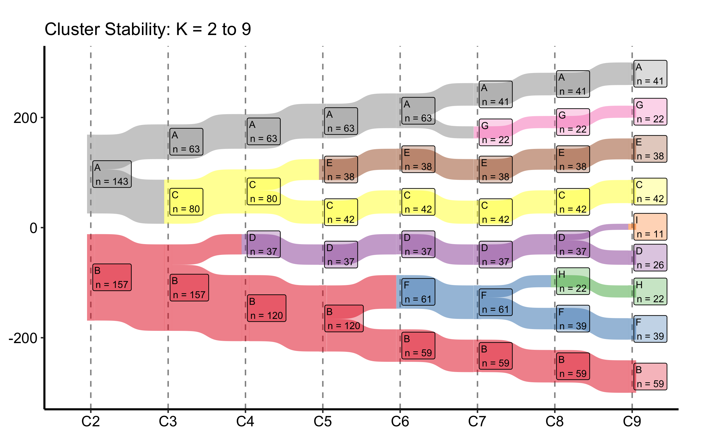
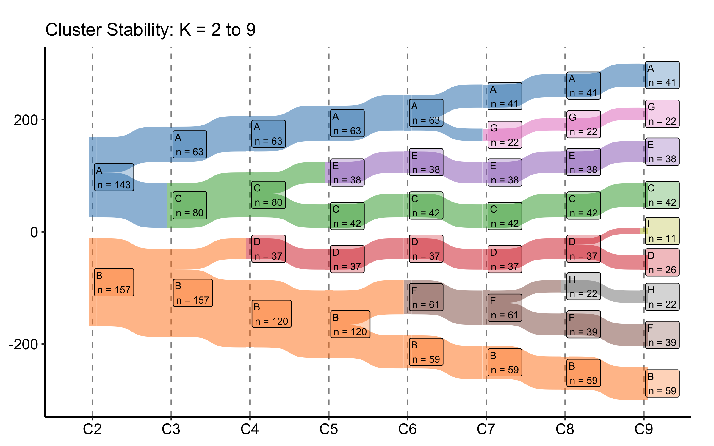
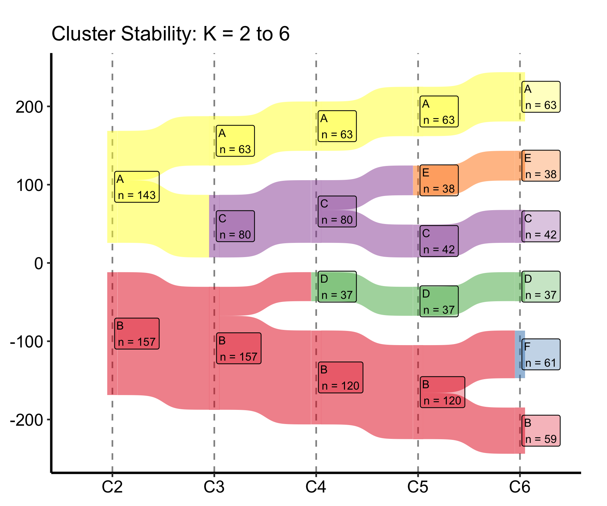

This chapter covers two figures that both answer the same kind of question: where did the patients go? An alluvial diagram traces how a cohort redistributes across a small number of clinical states. A cluster-stability Sankey traces how a single cohort gets carved into more and more groups as you turn up the number of clusters. They share a visual grammar (bands whose width is a count, flowing left to right) but the data they want and the story they tell are different enough that we treat them as two recipes under one roof.
22.1 Alluvial plots
22.1.1 When to use it
Reach for an alluvial diagram when you can describe each patient by two or three categorical states measured in sequence, and the interesting thing is the movement between them. The canonical CORR example is a valve cohort: an aortic regurgitation (AR) grade before surgery, the procedure they received, and the AR grade after. A bar chart of post-operative grades would tell you the endpoint; an alluvial tells you who came from where. You can see at a glance that most of the severe-AR patients ended up at none-or-mild, and you can see the handful who did not.
hv_alluvial(), from hvtiPlotR (Ehrlinger 2026), prepares the diagram on top of ggalluvial (Brunson and Read 2026). Each row of the input is one unique combination of the axis values together with a count, and plot() draws a band for that combination sized in proportion to the count. As with the rest of the package, plot() returns a bare ggplot you finish with the usual +.
22.1.2 The data it needs
hv_alluvial() wants one row per unique combination of axis values, plus a column holding the patient count for that combination. The axes vector names the categorical columns in left-to-right display order; y_col names the count. sample_alluvial_data() simulates 300 patients with pre-operative AR grade, procedure type, and post-operative AR grade, already collapsed to the one-row-per-combination shape the constructor expects.
Start from the bare panel so you can see what the constructor produced before any styling. Build the object once, then call plot() on it.
al <-hv_alluvial(dta_al, axes = axes, y_col ="freq")plot(al)

That is the raw material: bands connecting every level of pre_ar through procedure to every level of post_ar, each band as wide as its count, and nothing else. Now layer on the house style. Passing fill_col to the constructor colours each band by a categorical column; here we colour by pre-operative grade so you can follow a single starting grade across the whole diagram. The matching scale_colour_manual() (with guide = "none") keeps the thin band outlines the same colour as their fill.
Figure 22.1: Alluvial diagram tracing AR-grade transitions from before surgery, through procedure, to after, with bands coloured by pre-operative grade
22.1.4 Read it
An alluvial diagram rewards reading the bands, not the columns. A few things to look for:
Follow one colour across the panel. With fill_col = "pre_ar", each colour is a starting grade. Trace the firebrick (severe) bands from left to right: where do they land at post-op? A figure where the severe colour concentrates at the none-or-mild end on the right is the story you want from a valve operation.
Band width is a count, not a rate. A wide band is a common pathway; a hairline band is a rare one. Do not confuse a thin band for a small effect, it is a small number of patients taking that route.
Missing bands are missing combinations. If there is no band from a given grade through a given procedure, that combination never occurred in the cohort. That absence is sometimes the finding (a procedure no one offered to the mild-AR group, say).
22.1.5 Variations
22.1.5.1 Two-axis before / after comparison
When you only need to compare two time points, drop the middle axis and pass just two columns to axes. Use axis_labels to replace the raw column names with readable stage labels, and annotate() to call out the direction of change directly on the panel. A diverging Brewer palette (RdYlGn, reversed) maps naturally onto an ordered grade where green is good.
al2 <-hv_alluvial( dta_al,axes =c("pre_ar", "post_ar"),y_col ="freq",fill_col ="pre_ar",axis_labels =c("Pre-operative", "Post-operative"))plot(al2) +scale_fill_brewer(palette ="RdYlGn", direction =-1,name ="AR Grade") +scale_colour_brewer(palette ="RdYlGn", direction =-1,guide ="none") +annotate("text", x =1.5, y =250,label ="Improvement after surgery",size =3.5, fontface ="italic") +labs(y ="Patients (n)",title ="AV Regurgitation Before and After Surgery") +theme_hv_manuscript()

Figure 22.2: Two-axis alluvial comparing AR grade before and after surgery, with annotation marking the direction of improvement
22.1.5.2 Milestone patient-flow with a clean y-axis
A patient-flow alluvial across clinical milestones — admission, a device placement, its removal, discharge — is often read for its shape: where the flow goes, not the exact count at each stage. When that is the focus, dropping the count axis declutters the panel. It is a trade-off, though: as the pitfalls below note, the axis (or the node counts) is what lets a reader recover absolute numbers, so keep it whenever the denominators matter. Here the movement is the story, so we pass show_yaxis = FALSE. One wrinkle: a full house theme re-styles the axes it would reinstate, so when you finish with theme_hv_manuscript() you blank the y elements again after it.
Figure 22.3: Milestone patient-flow alluvial across the mechanical circulatory support device course, with the count axis suppressed to emphasise pathway shape
Each band is one pathway — the patients who share the same admission-to- discharge route — its width the number who took it (the aggregated freq), and its colour where it ends. With the axis gone the figure reads as a flow, not a stacked bar, which is the point of an alluvial in the first place.
22.2 Cluster-stability Sankey plots
22.2.1 When to use it
A clustering analysis leaves you with an awkward choice: how many clusters? Pick two and you may be lumping distinct groups; pick nine and you may be splitting noise. The cluster-stability Sankey turns that choice into a picture. It lines up the cluster assignments at K = 2, K = 3, and so on across the panel, and draws a band for every patient flow between consecutive K values. Where a single cluster splits cleanly into two as K rises, you see one band fork into two orderly bands. Where the partition is unstable, you see patients shuffling sideways and bands crossing. The point where the orderly splitting gives way to churn is the point where K has outrun the data.
hv_sankey()(Ehrlinger 2026) builds this diagram on top of ggsankey (Sjoberg 2026). It reads a block of cluster-assignment columns and works out the flows for you; node labels show the cluster letter and its patient count.
22.2.2 The data it needs
hv_sankey() wants one row per patient and one column per value of K, each column holding that patient’s cluster label at that K. sample_cluster_sankey_data() returns 300 patients with nine such columns, C2 through C9, where C2 is the PAM (partitioning-around-medoids) label at K = 2 and so on up to K = 9. A quick table() on the last column confirms the marginal cluster sizes before you build the figure.
C2 C3 C4 C5 C6 C7 C8 C9
1 B B B B F F H H
2 B B B B F F H H
3 A A A A A A A A
4 A A A A A G G G
5 B B D D D D D D
6 B B B B F F F F
table(dta_san$C9)
B F H D I C E G A
59 39 22 26 11 42 38 22 41
22.2.3 Build it
The constructor finds the C2 through C9 columns on its own, so the default build is a single call. It derives the node order from the data — seating each cluster next to the parent it splits from — so the flows stay uncrossed and no empty placeholder boxes appear, without you naming an order. We add a title and the manuscript theme; the Set1 palette gives each cluster letter its own colour.
sk <-hv_sankey(dta_san)plot(sk) +labs(title ="Cluster Stability: K = 2 to 9") +theme_hv_manuscript()

Figure 22.4: Cluster-stability Sankey tracing how patient assignments split across K = 2 through K = 9
22.2.4 Read it
Read this figure left to right, watching what happens to each band as K increases:
Clean forks mean stability. When one cluster at K splits into two at K + 1 and the two children stay intact afterward, that split is real. Bands that hold their width across several columns are the partitions you can trust.
Crossing and churn mean you have gone too far. Once you see patients jumping between clusters that are not parent-and-child (bands crossing each other, narrow ribbons peeling off in both directions), the extra clusters are carving up noise. The last K before the churn starts is a defensible choice.
Node counts anchor the bands. Each node is labelled with its size. A cluster that drops to a handful of patients as K grows is a sliver the algorithm split off, not a group you would report.
22.2.5 Variations
22.2.5.1 Custom colour palette
Replace the default Set1 colours with a named vector. The names must match the node labels (the cluster letters) in the data, so every letter from A through I needs an entry.
my_cols <-c(A ="#1f77b4", B ="#ff7f0e", C ="#2ca02c", D ="#d62728",E ="#9467bd", F ="#8c564b", G ="#e377c2", H ="#7f7f7f",I ="#bcbd22")sk_custom <-hv_sankey(dta_san, node_colours = my_cols)plot(sk_custom) +labs(title ="Cluster Stability: K = 2 to 9") +theme_hv_manuscript()

Figure 22.5: Cluster-stability Sankey with a custom named colour palette mapped to the cluster letters
22.2.5.2 Subset of K values
Pass a shorter cluster_cols vector to the constructor to show only a range of K. Once a stability plateau is clear, you rarely want the full K = 2 to 9 span in a manuscript panel; trimming to K = 2 to 6 keeps the bands wide enough to read in print.
sk_sub <-hv_sankey(dta_san, cluster_cols =paste0("C", 2:6))plot(sk_sub) +labs(title ="Cluster Stability: K = 2 to 6") +theme_hv_manuscript()

Figure 22.6: Cluster-stability Sankey trimmed to K = 2 through K = 6 to keep the bands legible in a manuscript panel
22.2.5.3 Milestone labels under the K axis
When the number of distinct groups changes at a particular column — most often in a collapsed view, where several clusters merge into one — it helps to call that out under the axis. group_labels takes a named vector mapping a column to a label, and plot() prints it beneath that column’s tick, leaving the others bare. flow_alpha and label_alpha set the band and box transparency if a dense panel needs a lighter touch.
Figure 22.7: Cluster-stability Sankey with group-count milestone labels printed beneath selected K columns
The flow geometry is unchanged; only the x-axis gains the annotations under the columns you name.
22.3 Pitfalls
Width is count, not proportion. Both figures size bands by raw patient counts. A wide band in a large cohort and a wide band in a small one mean different things; always show the axis (Patients (n)) or the node counts so the reader is not guessing.
Alluvial axis order is a choice. The left-to-right order of axes is the reading order. Put the columns in clinical sequence (pre, procedure, post), not alphabetical or column order, or the flows will tell a scrambled story.
Colour the start, not the end. Filling an alluvial by the first axis lets you trace where each starting group went. Filling by the last axis hides exactly the movement you built the figure to show.
A stable Sankey is not a correct K. The stability plot tells you which K values the data supports geometrically. It does not tell you which K is clinically meaningful. Read it alongside the cluster profiles, not instead of them.
ggsankey is not on CRAN.hv_sankey() needs the ggsankey package, which installs from GitHub (remotes::install_github("davidsjoberg/ggsankey")). If the Sankey chunks error on a fresh machine, that missing dependency is the first thing to check.
Ehrlinger, John. 2026. hvtiPlotR: HVTI Ggplot2 Themes and Clinical Plot Functions for the Cleveland Clinic Heart & Vascular Institute. https://github.com/ehrlinger/hvtiPlotR.